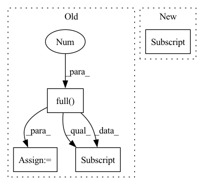

Pattern ID :14792

Before Change
mask_cond = paddle.arange(mask.shape[-1])
mask_cond = mask_cond < (mask_cond + 1).reshape([mask.shape[-1], 1])
mask = paddle.where(mask_cond, paddle.full(mask_cond.shape, 0), mask)
if past_key_values_length > 0:
mask[:, :past_key_values_length] = False
expanded_mask = mask.unsqueeze(0).expand([batch_size, target_length, target_length + past_key_values_length])
return expanded_mask
After Change
if past_key_values_length > 0:
mask = paddle.concat([paddle.zeros(target_length, past_key_values_length), mask], axis=-1)
return mask[None, None, :, :].expand([batch_size, 1, target_length, target_length + past_key_values_length])
def _expand_mask(mask, dtype, tgt_length):
In pattern: SUPERPATTERN
Frequency: 3
Non-data size: 4
Instances
Fragment ID: 48658677
Project Name: paddlepaddle/paddlenlp
Commit Name: 5f01f073ed6e140743170652b201c16356350dc7
Time: 2023-04-13
Author: 40840292+linjieccc@users.noreply.github.com
File Name: paddlenlp/transformers/llama/modeling.py
M Class Name: AnonimousClass
N Class Name: AnonimousClass
M Method Name: _make_causal_mask(3)
N Method Name: _make_causal_mask(3)
M Parent Class:
N Parent Class:
M File Name: paddlenlp/transformers/llama/modeling.py
N File Name: paddlenlp/transformers/llama/modeling.py
M Start Line: 96
M End Line: 106
N Start Line: 101
N End Line: 109
'>
Before Change
src_idx = self._get_src_permutation_idx(indices)
target_classes = torch.full(src_logits.shape[:2], 0, dtype=torch.int64, device=src_logits.device)
target_classes[src_idx] = 1
loss_ce = F.cross_entropy(src_logits.transpose(1, 2), target_classes, weight=self.cls_weights.cuda(), label_smoothing=0.0)
return loss_ce
After Change
// Remove non existent classes
valid_ids = (cls_labels != -1).nonzero()
loss_ce = F.binary_cross_entropy_with_logits(cls_preds[valid_ids].squeeze(), cls_labels[valid_ids].squeeze())
return loss_ce
def loss_bboxes(self, outputs, targets, matches, num_boxes, matches_per_class=1):
'>
Fragment ID: 48658675
Project Name: bwittmann/transoar
Commit Name: 09f57bf9bd1146b57db0cce80a0901defe5e5d63
Time: 2022-02-15
Author: bastian.wittmann@tum.de
File Name: transoar/models/criterion.py
M Class Name: TransoarCriterion
N Class Name: TransoarCriterion
M Method Name: loss_class(3)
N Method Name: loss_class(3)
M Parent Class: nn.Module
N Parent Class: nn.Module
M File Name: transoar/models/criterion.py
N File Name: transoar/models/criterion.py
M Start Line: 40
M End Line: 47
N Start Line: 41
N End Line: 47
'>
Before Change
idx = self._get_src_permutation_idx(indices)
target_classes_o = torch.cat([t["labels"][J] for t, (_, J) in zip(targets, indices)])
target_classes = torch.full(src_logits.shape[:2], 0,
dtype=torch.int64, device=src_logits.device)
target_classes[idx] = target_classes_o
loss_ce = F.cross_entropy(src_logits.transpose(1, 2), target_classes, self.cls_weights.to(device=src_logits.device))
return loss_ce
After Change
// Remove non existent classes
valid_ids = (soft_labels.flatten() != -1).nonzero()
loss_ce = F.binary_cross_entropy_with_logits(cls_preds[valid_ids].squeeze(), cls_labels[valid_ids].squeeze().cuda())
return loss_ce
'>
Fragment ID: 48658673
Project Name: bwittmann/transoar
Commit Name: 50cc4661dc99397fe437a829cff6659bfd58eaba
Time: 2022-04-19
Author: bastian.wittmann@tum.de
File Name: transoar/models/criterion.py
M Class Name: TransoarCriterion
N Class Name: TransoarCriterion
M Method Name: loss_class(4)
N Method Name: loss_class(4)
M Parent Class: nn.Module
N Parent Class: nn.Module
M File Name: transoar/models/criterion.py
N File Name: transoar/models/criterion.py
M Start Line: 45
M End Line: 54
N Start Line: 42
N End Line: 48